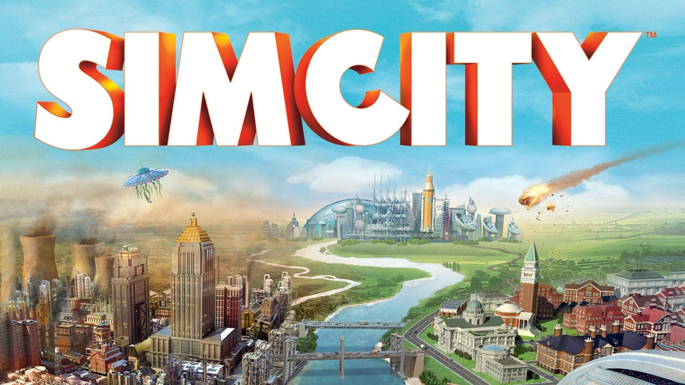

Los videojuegos de estrategia son aquellos en donde la forma de juego requiere el uso de un pensamiento táctico y la planificación de acciones para alcanzar la victoria. Estos juegos suelen caracterizarse por dar una gran libertad al jugador para diseñar su camino a seguir.
Juegos basados en la construcción de una propiedad y la administración económica de la misma. El desarrollo del juego se centra en el aspecto de la administración de los recursos y la construcción edilicia para mejorar o expandir la propiedad, teniendo como fin ganar clientes y dinero para continuar con el crecimiento. También hay juegos que permiten administrar una ciudad, controlando aspectos como la seguridad, la salud y la industria a medida que va creciendo el número de habitantes. Ejemplos: SimCity, Theme Park...
Género de estrategia que se centra en el manejo del dinero, dejando de lado la construcción. Este tipo de videojuegos simulan el mundo de los negocios. El videojugador cuenta con un capital determinado y debe tratar de generar ganancias invirtiendo su capital sabiamente y negociando con los personajes del juego. Ejemplos Aerobiz Supersonic, Railroad Tycoon

Este tipo de simuladores se asemejan a los juegos de negocios, pero tienen como objetivo el desempeño exitoso de la actividad por sobre la ganancia de dinero. La forma de juego se focaliza principalmente en el uso correcto de herramientas frente a distintas situaciones. Entre los simuladores de oficio se pueden encontrar videojuegos en donde el usuario asume el rol de granjero, médico o cocinero, entre otros. Ejemplos: Harvest Moon, Cooking Mama

Este tipo de videojuegos simulan el cuidado y mantenimiento de seres vivos virtuales, estos pueden ser animales reales o fantásticos y también personas. El objetivo es garantizar el correcto desarrollo del ser que se está cuidando. Por ejemplo, los simuladores de mascotas requieren cuidar aspectos como la alimentación, el ejercicio y la felicidad. Los simuladores de personas son también agrupados en la categoría de "simuladores sociales", ya que incluyen aspectos de la vida cotidiana como el trabajo, los pasatiempos y las relaciones interpersonales. También existen los denominados "simuladores de dios", en donde el jugador puede crear y controlar el desarrollo de seres vivos y su hábitat en el rol de un ser omnipotente. Ejemplos: The Sims, Spore

Este género agrupa a los distintos videojuegos que introducen al jugador en el control de un vehículo de la manera más realista posible, incluyendo aspectos como el manejo, el mantenimiento, las limitaciones de la física, la maniobrabilidad. Los más populares son los simuladores de vuelo, que permiten tener la experiencia real de controlar un avión de pasajeros o una nave de guerra, también son comunes los simuladores de trenes, vehículos militares y navales. Algunos simuladores además se basan en vehículos futuristas como naves espaciales y mechas. Los videojuegos que representan vehículos de carreras suelen incluirse en un género distinto (Carreras) porque en ellos prima la competitividad y la acción rápida por sobre la experiencia de manejo y el realismo. Ejemplos: Microsoft Flight Simulator, Train Simulator